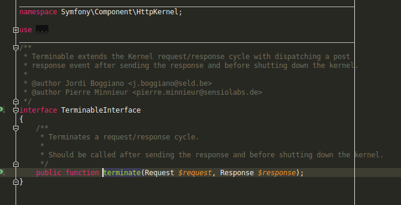

# Symfony + Drupal = 💙
- Eirik Morland, Ny Media AS
- [@orkj](https://twitter.com/orkj)
# Agenda
- A brief history
- How is Drupal using Symfony?
- What Symfony paradigms are Drupal using?
- What are the benefits of this friendship?
- What does the future of Drupal and Symfony look like?
## Brief history
- Version 8 was the version where Drupal "got off the island"
- Symfony components has been in Drupal since version 8.0.0 (November 2015)
- First shipped with Symfony 2.7, currently with 3.4
- Symfony is not the only important aspect of getting "off the island"
## How is Drupal using Symfony?
## Yes, but do we even use it?

# Other similarities
## ...and many more
- Event listeners and dispatchers
- Console components
- Service container and dependency injection
- Serializers (i.e json or xml)
# Benefits of Symfony + Drupal
## 1. Code re-use
## 2. Documentation already exists
## 3. Less Drupalisms
## 4. Coordinated security
- For example CVE-2018-14773
- Other example: CVE-2019-6339
# The future of Drupal + Symfony
> Our biggest dependency in Drupal 8 is Symfony 3, and according to Symfony's roadmap, Symfony 3 has an end-of-life date in November 2021. This means that after November 2021, security bugs in Symfony 3 will not get fixed. To keep your Drupal sites secure, Drupal must adopt Symfony 4 or Symfony 5 before Symfony 3 goes end-of-life (...) This means we have to end-of-life Drupal 8 no later than November 2021.
## Thank you!
- [@orkj](https://twitter.com/orkj)
- [https://github.com/eiriksm/](https://github.com/eiriksm)
- [https://eiriksm.github.io/symfony-drupal/](https://eiriksm.github.io/symfony-drupal/)